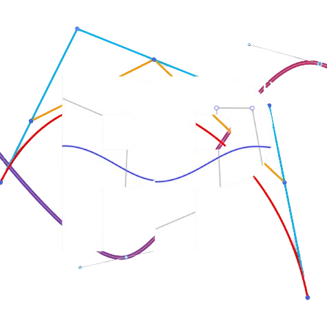
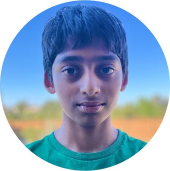

Discover the talented programmers behind Team Citrix who drive innovation and excellence in FIRST Tech Challenge.
We are the coding team of Team Citrix #31007, and we work hard to develop our robot's brain so it can be competition ready.
Our programmers work with
Lines of Code
Success Rate
Development
Innovation
We leverage industry-standard tools and frameworks to build robust, efficient robotics software.
Primary FTC programming language

Powerful Java Library
Official robotics framework
Version control & collaboration
Our dedicated programmers work together to solve complex problems and deliver exceptional results.

Coder / Teleop
Hi! My name is Lakshya Dusanapudi, and I am a teleop programmer on Team Citrix. I code most of the Tele-op program for our robot, and assist Pranav in creating the Autonomous program.
Coder / Autonomous
Hi! My name is Pranav Somayajula, and I am an autonomous programmer on Team Citrix. I code most of the Autonomous program for our robot, and assist Lakshya in creating the Tele-op program.